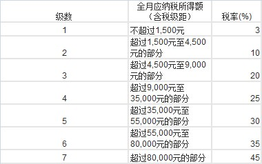

三、哈斯卡魔抗的结算机制
经常听到刀友们这样的言论： “98.50%的魔法抗性，近乎于魔免，哈斯卡魔法打不死。” “哈斯卡剩下xx血，某技能肯定打不死我 。”
先不论这些说法正确与否，我们先讨论一下*朝的个人所得税的计算方式， 最新规定个人所得税免征额3500元，超过3500的部分按下表计算：

那么假设，我月收入10w，税率是不是45%？很明显*朝黑到收4w5的税，那还不反了？这是阶梯计算，不同的部分税率不同，10w具体纳税多少，中学时我们肯定做过这样的题目，这里我就不算了。
问题是，哈斯卡的狂战士之血技能会如同*朝个税的计算方式一样，动态的判定当前血量，从而实时计算每一个状态的魔抗吗？
答案是，不。哈斯卡狂战士之血的魔抗是以当前血量来计算的，并非动态计算每一点伤害后的剩余血量比例。比如，满血的哈斯卡魔抗30.25%，那么7级裸体815血量的哈斯卡，魔法有效生命值为815/(1-30.25%)=1168.4588。意味着，如果有一个魔法技能有1169以上的伤害，是可以直接秒掉815血量的哈斯卡！！虽然1169伤害的魔法技能并不存在，但是减魔抗后蓝杖莱恩火女还是可以实现的。收到第一次伤害后，才开始计算当前的狂战士之血的层数。
结论:对于每一次魔法伤害，哈斯卡狂战士之血增加的魔抗，是以当前血量来计算的，而非动态分阶计算。